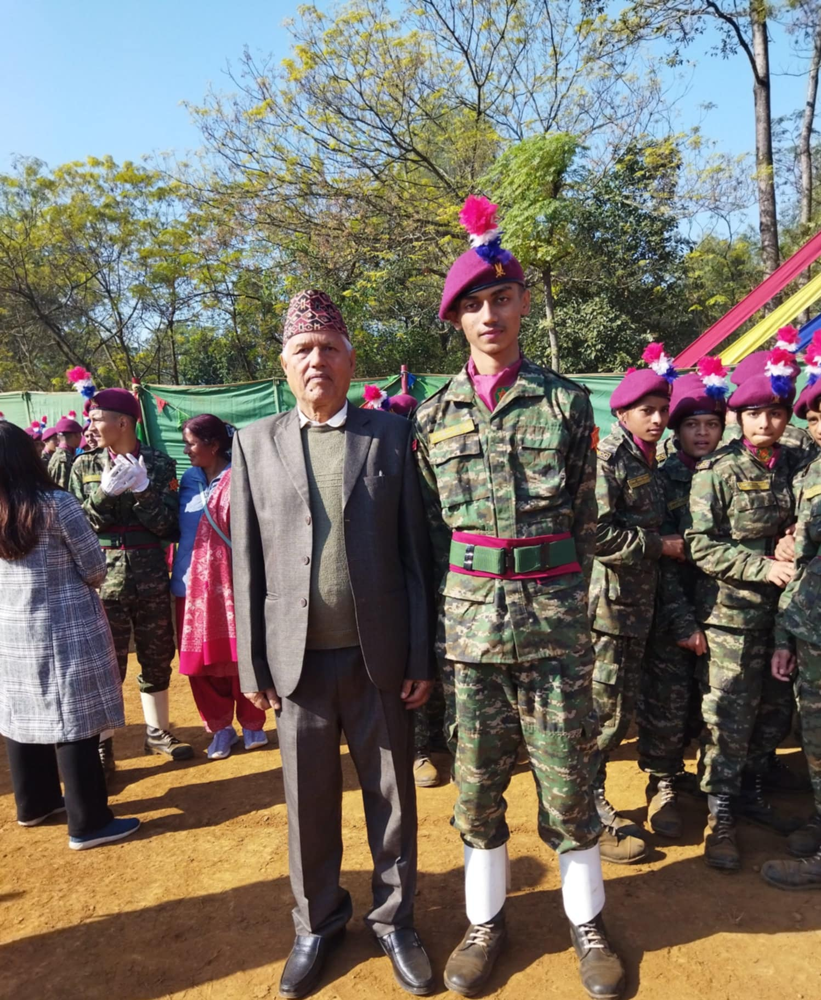

In 2024, I took part in NCC. It was training program for young students of the Army Disclipline. The program lasted for 100 days. The first 79 days were spent doing basic army training, whereas, the last 21 days were spent on army barracks located in Chitwan. The trainings were brutal and painful. But, at the end of the day, a sense of accomplishment and pride was what I felt. I was able to learn a lot of things and make some good friends in the process. There were multiple exams and tests. Model Briefing was one of those events that i was in. I did great and made it to semi-finales. Altogether I did great and fell just short of being a Sergeant class. Even after a year and half, I still am suprised how much I was able to learn and how much I was able to grow in such a short period of time.